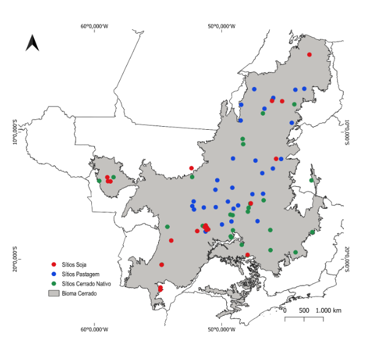

Referências Conceituais
O Modelo Century
O modelo Century é um modelo de processos biogeoquímicos utilizado para estimar a ciclagem e estoques de nutrientes críticos em ecossistemas variados. Desenvolvido pelo Colorado State University, tem ampla aplicação no Brasil e em ecossistemas tropicais (Wendling et al., 2014; Baethgen et al., 2021). O modelo tem como incluir ciclagem e estoques de Carbono, Fósforo, Nitrogênio e Enxofre, porém tem maior aplicação para Carbono e Nitrogênio.
O modelo é composto de três sub-modelos: vegetação, água e dinâmica de matéria orgânica e precisa de entradas sobre cobertura e manejo ao longo do tempo, clima e solos. A estrutura básica dos arquivos utilizados para estruturar o modelo está à mostra em Figura 1. Os doze arquivos que fazem parte do FILE100 permitem especificar o uso e cobertura ao longo do tempo.
 Figura 1. Estrutura do modelo Century mostrando a relação entre os programas e os arquivos acessórios detalhando a agenda dos usos e eventos ao longo do tempo (EVENT100) e os detalhes de tratamento de manejo e uso como fertilização (FERT), pastejo (GRAZ), e fogo (FIRE) entre outros.
Figura 1. Estrutura do modelo Century mostrando a relação entre os programas e os arquivos acessórios detalhando a agenda dos usos e eventos ao longo do tempo (EVENT100) e os detalhes de tratamento de manejo e uso como fertilização (FERT), pastejo (GRAZ), e fogo (FIRE) entre outros.
Calibração e Validação no Cerrado Brasileiro
O LAPIG em parceria com UFS e TNC tem trabalhado ao longo dos últimos anos na melhoria do modelo Century na região do Cerrado Brasileiro (Santos et al., 2022, Santos et al., 2024) e na calibração do modelo para usos típicos da região. Atualmente, já possui a calibração e validação a partir de 111 sítios distribuídos (Figura 2) na região para três usos específicos: Cerrado (39), pastagem (30) e soja (42).
Para calibrar o modelo é necessário informações sobre estoques de carbono, densidade, pH e granulometria do solo, assim como informações sobre a vegetação em pé. Atualmente temos variabilidade de região, clima, e solos dentro dessas amostras. Porém, o agrupamento dos sítios atuais deixa algumas regiões com menos amostras. A calibração do modelo requer dados de estoques de carbono, densidade, pH e granulometria do solo, além de informações sobre a vegetação. Atualmente, as amostras exibem variabilidade regional, climática e de tipos de solo. No entanto, o agrupamento dos locais de amostragem resulta em uma cobertura desigual, com algumas regiões apresentando um número reduzido de amostras.
Para otimizar o modelo, a seleção de áreas de amostragem de solo deve considerar a distribuição atual das propriedades rurais que integram o programa REVERTE®, bem como a baixa representatividade espacial nos locais de calibração e validação. A escolha das fazendas para amostragem adicional priorizou aquelas que possibilitam a comparação entre áreas de soja e pastagens, levando em conta fatores como solo, região, dados de manejo disponíveis e o tempo decorrido desde a conversão, conforme o agrupamento das fazendas e suas variáveis específicas.

Figura 2. Distribuição de 111 sítios utilizada para calibração e validação de modelo CENTURY divididos entre 3 coberturas: cerrado (39), pastagem (30) e soja (42).Variáveis e Dados Complementares
Além dos dados fornecidos pela Syngenta, foram levantadas as informações que atualmente servem de base para o modelo, considerando as características específicas de cada talhão/fazenda participante do programa, como:
- Dados meteorológicos obtidos do Banco de Dados Meteorológicos (BDMEP) do Instituto Nacional de Meteorologia (INMET);
- Características edáficas baseadas em amostras de 0 a 10 cm, coletadas em anos anteriores, e complementadas por dados do PronaSolos da Embrapa, em escala de 90m, para as profundidades de 10 a 30 cm.